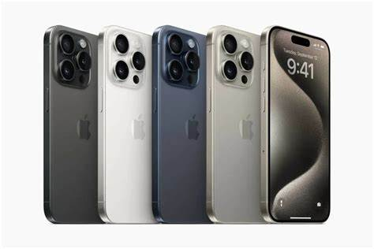
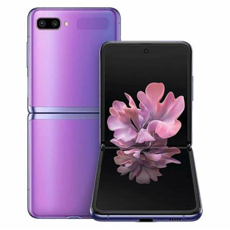
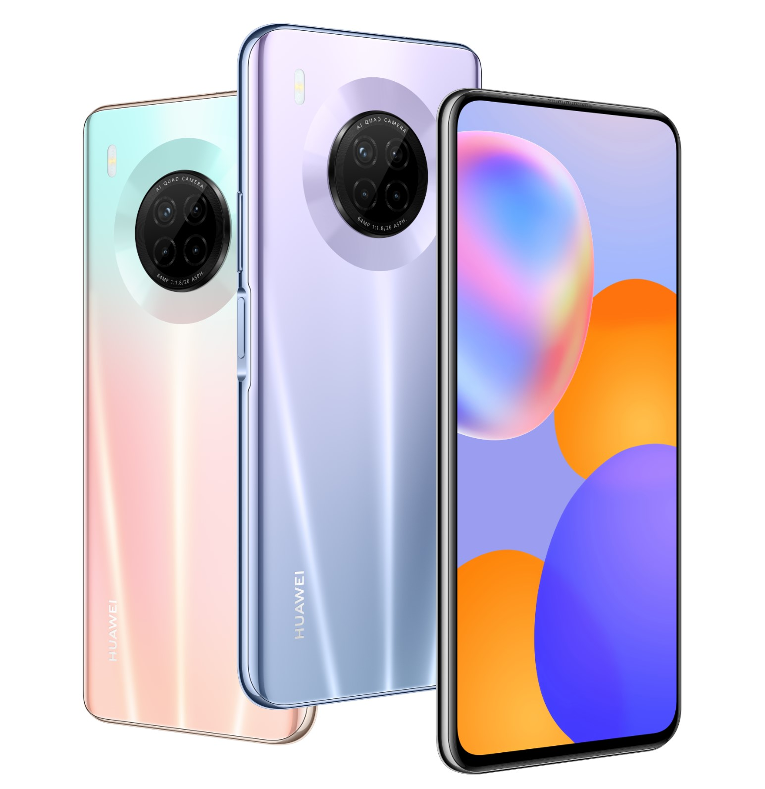
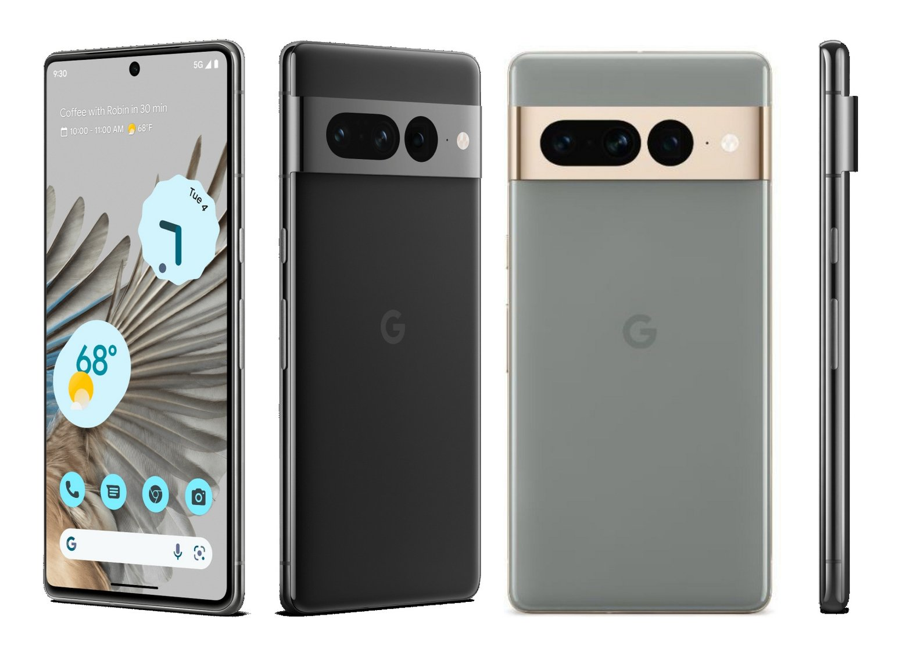
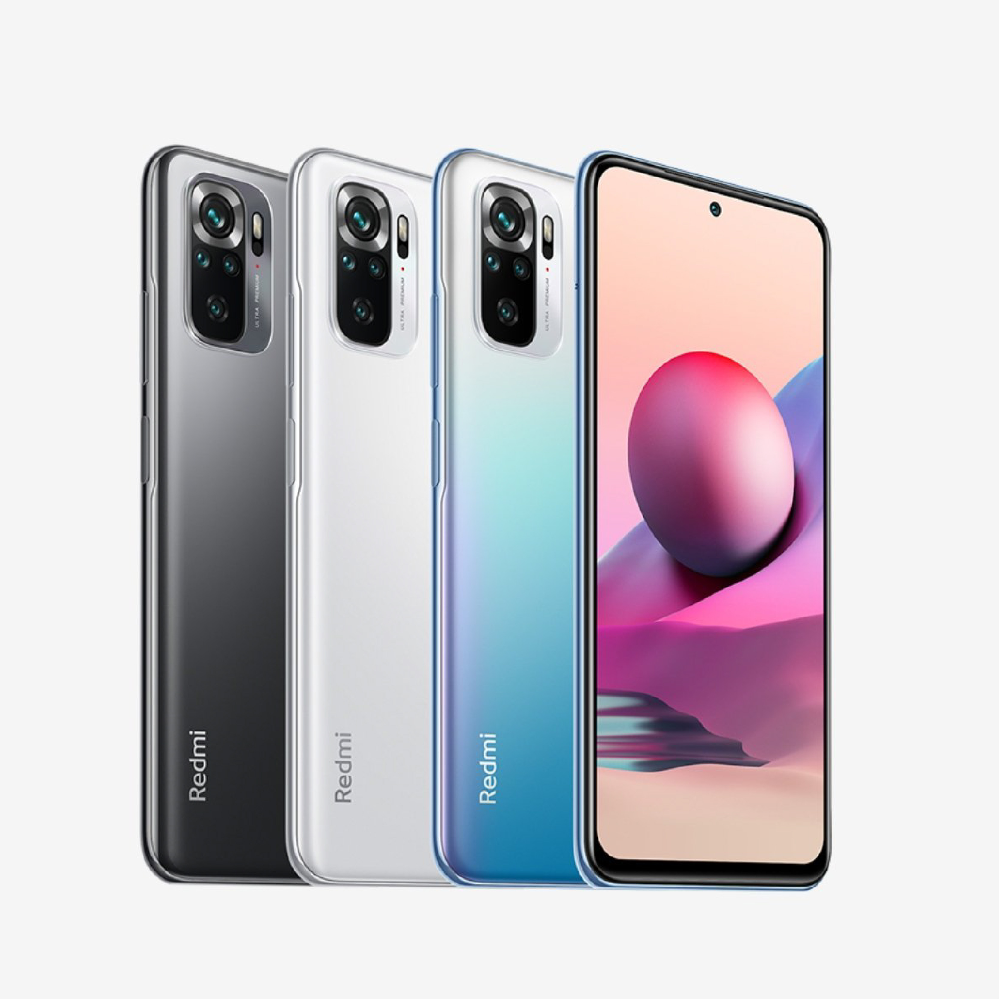

En el mercado de dispositivos móviles, existen muchas marcas de celulares populares. Estas marcas ofrecen una variedad de modelos con diferentes características y precios para satisfacer las necesidades de los consumidores.
Cada marca tiene su propia identidad y enfoque en términos de diseño, innovación y sistemas operativos. La elección de un teléfono celular depende de las preferencias personales y las necesidades individuales del usuario.
Apple iPhone
Samsung Galaxy Z Flip
Huawei Phone
Google Pixel
Xiaomi
Es importante investigar y comparar las características de los diferentes modelos antes de tomar una decisión de compra.